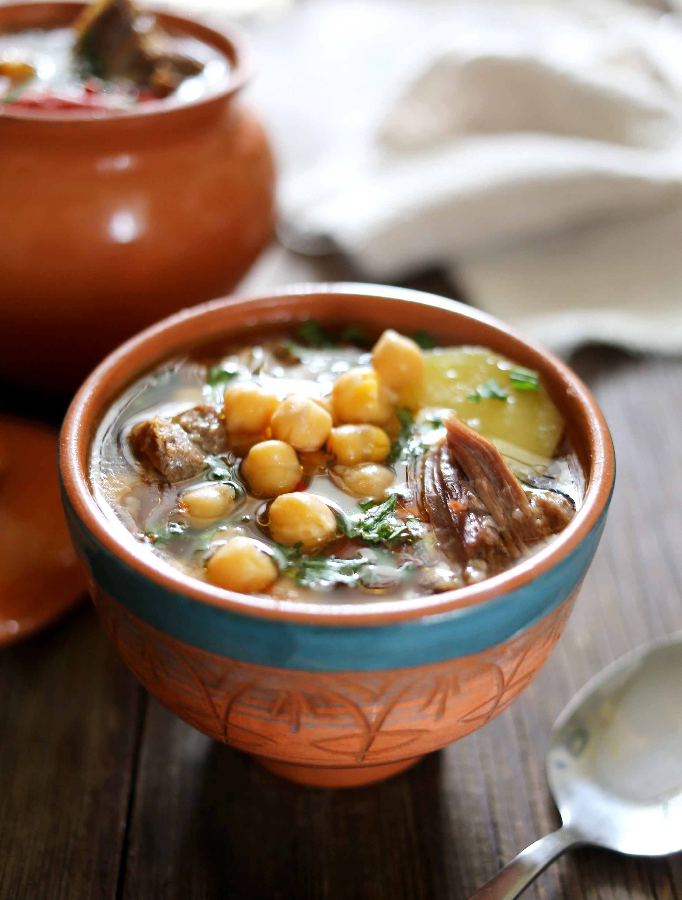

Бозбаш и пити — практически близнецы-братья. Готовятся они из одинакового набора продуктов, но при этом отличается техника приготовления: бозбаш варят в казане или кастрюле из баранины или говядины с добавлением нута и овощей, а пити традиционно запекают в горшочках, куда поочередно закладываются овощи и мясо с нутом и заливаются водой или бульоном. Получается что- то среднее между супом и овощами, томлёнными с мясом в печи. В бозбаш и пити обычно кладут нут, сушёную алычу или вяленые помидоры, иногда айву, встречаются версии с курагой и яблоками. Можно добавить хлопья сушёного перца зимой или болгарский перец летом. Причём в летнюю версию идут свежая алыча и помидоры, иногда дополнительно зелёная фасоль или бамия. В вариации рецепта под названием кюфта-бозбаш вместо мяса используют мясные тефтели с рисом с «сюрпризом» — сушёной алычой внутри. Рецепт этого блюда вы найдёте в конспекте «ПРАвильные горячие супы». Для большей насыщенности вкуса лучше использовать мясо на косточке, особенно для пити.